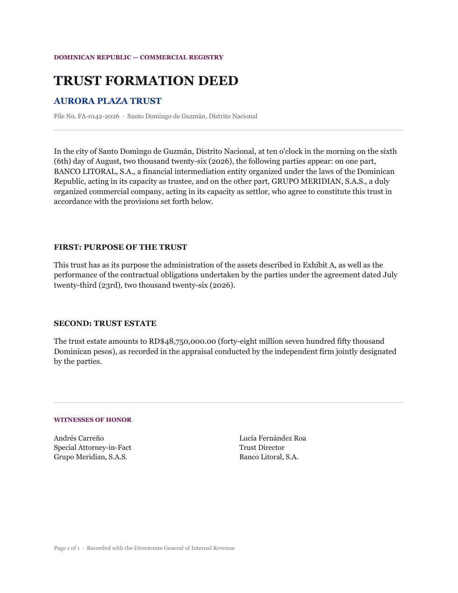
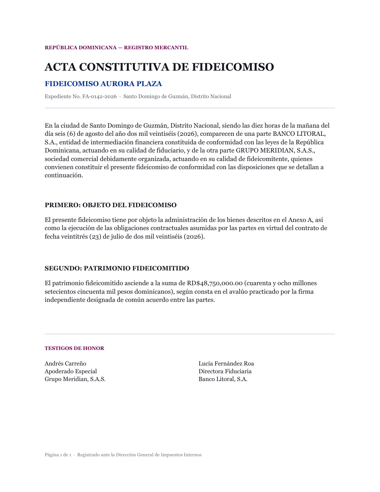

Spanish documents, translated in place.
palimpsest translates PDFs and Office files without rebuilding them — same pages, same fonts, same artwork, only the words change. Anything you list as protected, a company name, a person, an amount, stays exactly as written.
- 1 Pick a backend. Gemini's free tier needs only an API key, no billing setup — see the sidebar.
- 2 Name what must survive verbatim. Company names, people, places — added once, protected everywhere.
- 3 Drop a file. PDF, Word, PowerPoint, or Excel — you get back a replica, plus an honest report of anything that didn't translate.


source translateddrag, or use ← → — Aurora Plaza Trust, sample deed, 1 of 1
Queue
Classified before anything is sent anywhere — a scan means an OCR pass, which is the slow part.
Before anything is spent
Nothing is sent to a translation backend until you confirm here.
Cost shown as unknown, not $0.00, whenever the backend can't price the request — Google Translate is free by design, not free by omission.
Running
trust-deed-aurora.pdf
Cancelling abandons the result — an in-flight OCR or translation call can't be interrupted mid-request, only left to finish and discarded.
154 of 172 paragraphs translated.
What didn't translate
Font substitutions
Emphasis applies to the whole phrase, not your selection — the PDF stores styling per phrase, not per character. Why ↗